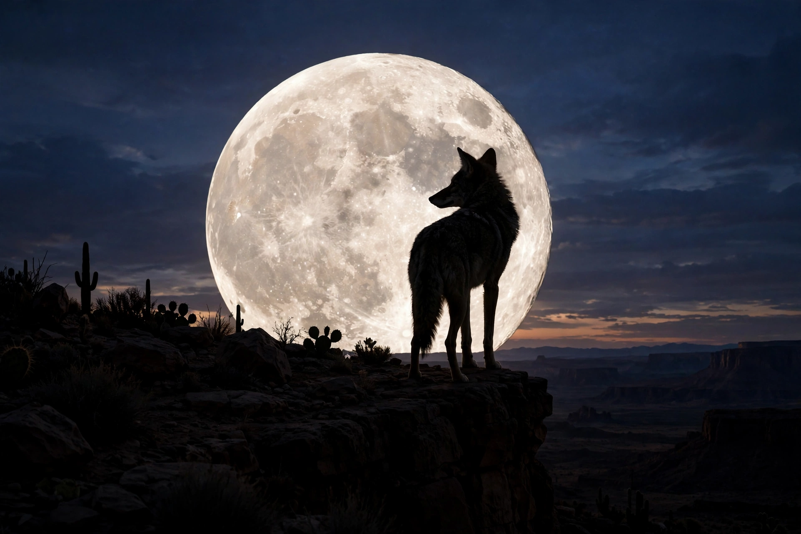

From Wikipedia, the free encyclopedia
| Coyote | |
|---|---|
| Grouping | Indigenous North American mythology and folklore |
| Depicted as | A coyote, or a man with coyote traits |
| Roles | Trickster; culture hero; creator and destroyer |
| Regions | Plains, Plateau, Great Basin, Southwest, California |

Coyote is a major figure of the mythologies of many Indigenous peoples of North America — a trickster, culture hero and frequent fool whose stories are told from the Great Plains and Plateau to the Great Basin, the Southwest and California. Coyote creates and destroys, steals fire and releases the animals, arranges the stars and the seasons, and just as often undoes his own work through greed, lust and vanity. He is among the most important characters in Native American storytelling, and his tales traditionally belong to the winter storytelling season in many communities.
In numerous Plateau and Basin narratives Coyote prepares the world for human beings: he kills monsters, dams or releases rivers, scatters the salmon and the buffalo, and establishes customs of birth, work and death — in some tellings decreeing that the dead shall not return, then regretting it when his own child dies. In a widespread tale he throws the stars carelessly across the sky after growing impatient with arranging them in patterns, explaining the disorder of the heavens outside the constellations. In others he steals fire (or daylight) for cold, dark humanity.
Coyote's appetites constantly undo him: he is duped by ducks and prairie dogs, burned, dismembered, and killed — and just as constantly revives, stepping over his own bones or being reassembled by a companion such as Fox. The tales are comic, obscene, cautionary and explanatory at once, satirising greed, pride and social pretension. Scholars have compared his dual creator-destroyer nature to tricksters worldwide — Anansi of West Africa, Loki of Norse myth, and Raven of the Northwest Coast — while stressing that each nation's Coyote is its own, embedded in its own language, landscape and law.
Coyote stories were collected by ethnographers in the nineteenth and twentieth centuries and remain living traditions, retold by Native writers and storytellers. The figure has also entered wider American culture — from the cartoon Wile E. Coyote, whose endless failed schemes echo the old tales' fool, to contemporary literature and art, where Coyote has become an emblem of survival, adaptation and subversive humour.
Anansi · Loki · Native American mythology · Trickster · Mythology